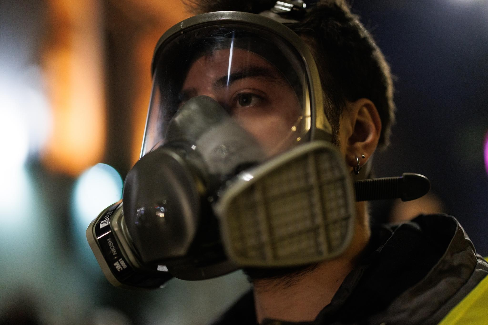

Hello 👋
A journalist based in Tbilisi, Georgia, covering politics, conflict, migration, authoritarianism, human rights, and Russian influence across the Caucasus and post-Soviet region. I work across formats including feature writing, live reporting, video, and field production. I report in Georgian, English, and Russian, with work also translated into German.